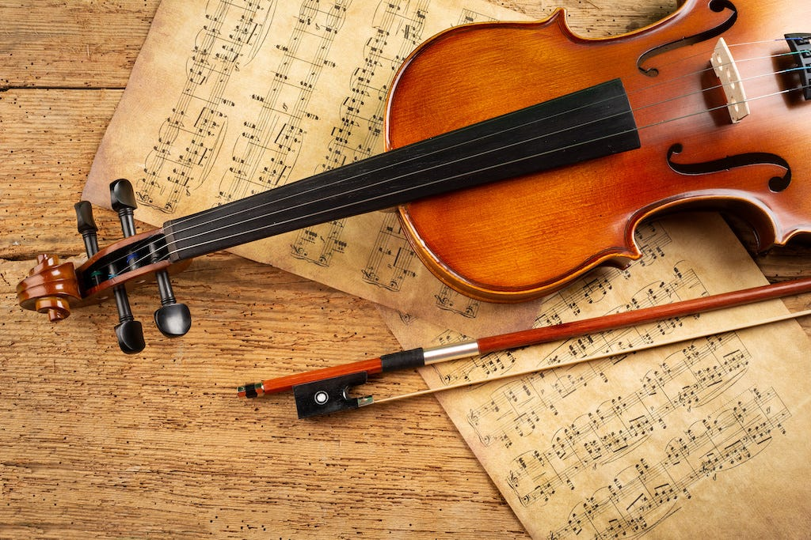

Классична музика є скарбницею величі та елегантності у світі звуків. Цей вираз мистецтва, виникший ще у середньовіччі, виросло до неперевершеної висоти в епоху Ренесансу, Бароко, Класицизму, Романтизму та впродовж 20-го століття.
Особливістю класичної музики є використання оркестру, комплексних гармоній, розроблених мелодій та структурованих форм. Великі композитори, такі як Bach, Mozart, Beethoven, та Tchaikovsky, створили шедеври, які вражають своєю красою та глибокістю.
Від симфоній та опер до сонат та концертів, класична музика вражає своєю різноманітністю та величчю. Вона перетинає час та залишає вічний слід у світовій культурі.
Дізнайтеся більше про велич класичної музики, розкрийте секрети великих майстрів та насолоджуйтеся цим безсмертним мистецтвом.
